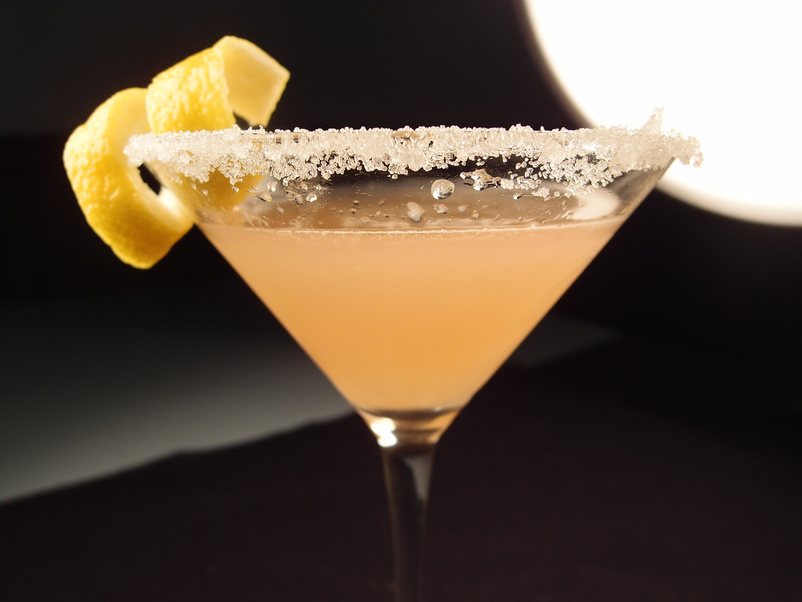
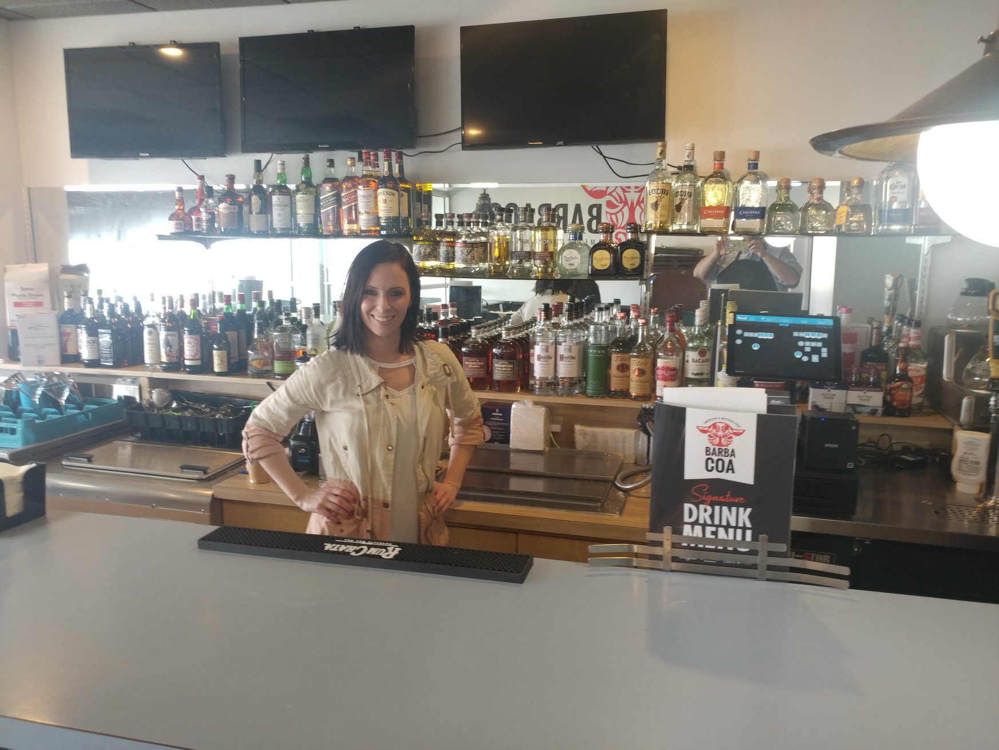
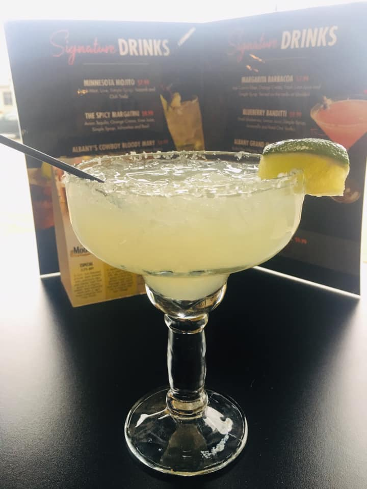
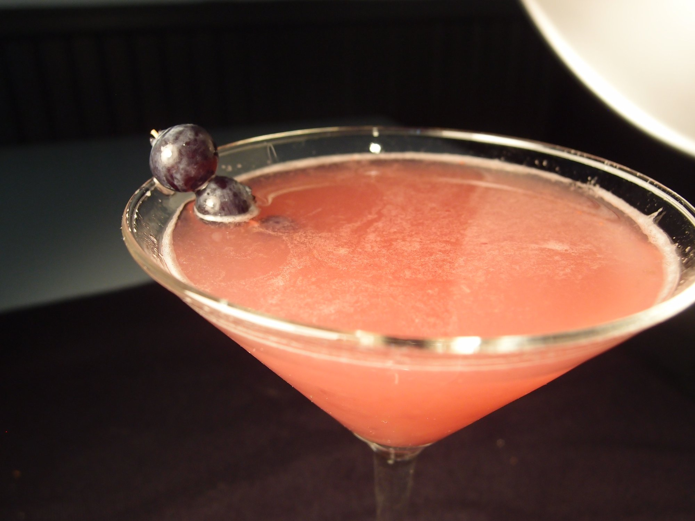

Minnesota MojitoFresh Mint, Lime, Simple Syrup, Bacardi, and Club Soda The Spicy MargatiniAvion Tequila, Orange Crema, Lime Juice, Simple Syrup, Jalapenos, and Basil Albany's Cowboy Bloody MaryJalapenos, Tito's Handmade Vodka, Tabasco Sauce, Salt, Pepper, Olive Juice, Lime Juice, and Bloody Mary Mix The Holland MuleGin, Lime Juice, and Ginger Beer The Khaleesi (Mother of Dragons)Fresh Cucumber, Mint, Jalapenos, Cucumber Vodka, Lime Juice, and Simple Syrup Ruby SlipperDeep Eddy Grapefruit Vodka, Lemon Juice, and Simple Syrup |
  |
|---|---|
Margarita BarbacoaJose Cuervo Silver, Orange Crema, Fresh Lime Juice, and Simple Syrup. Served on the rocks or blended. Bluberry BandittiFresh Blueberries, Lemon Juice, Simple Syrup, Limoncello, and Ketel One Vodka Albany Grand ManhattanBulleit Rye Whiskey, Sweet Vermouth, Grand Marnier, and Orange Bitters The Duke's BootGentleman Jack with Water Back The 10,000 Lakes Old FashionedOrange Bitters, Bitters, Cherry Juice, and Buffalo Trace Bourbon The Collegeville Rusty NailGlenlivet 12 yr and Drambuie |
  |